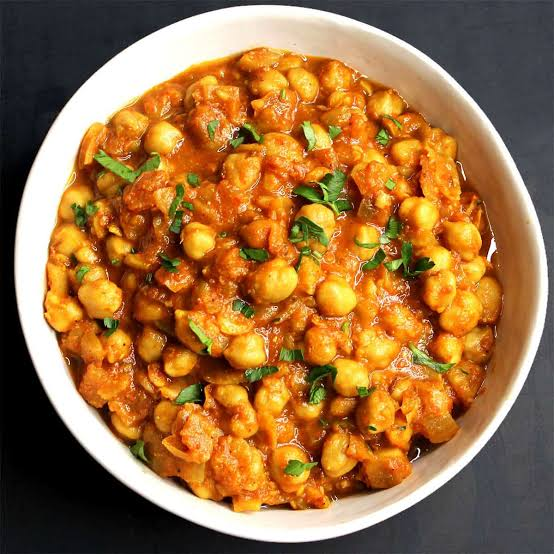

Chana Masala Recipe

Description:
Chana Masala is a popular, protein-rich North Indian chickpea curry. Cooked chickpeas are simmered in a spiced, tangy tomato and onion gravy. It is known for its deep flavors, aromatic spices, and versatility, commonly paired with basmati rice, naan, or bhatura.
Key Ingredients:
- Aromatics & Base: 2 cups cooked chickpeas (chana), canned or soaked and boiled1 large onion, finely chopped3 medium tomatoes, pureed or finely chopped1 tbsp ginger-garlic paste1-2 green chilies, slit (optional)
- Spices: 1 tsp cumin seeds1 tsp coriander powder1/2 tsp turmeric powder1 tsp red chili powder or Kashmiri chili powder1-2 tsp garam masala or chana masala powderSalt to taste
- Garnish & Tempering: 1 bay leaf and a small stick of cinnamon1 tbsp chopped fresh cilantro (coriander leaves)1-2 tbsp oil or ghee1 tsp lemon juice or amchur (dried mango powder) for tang
Step-by-Step Instructions:
- Temper the Spices: Heat oil or ghee in a heavy-bottomed pan or skillet over medium-high heat. Add the cumin seeds, bay leaf, and cinnamon. Sauté for a few seconds until the spices sizzle and release their aroma.
- Sauté Aromatics: Add the chopped onions and a pinch of salt. Cook until the onions are soft and turn a deep golden brown. Stir in the ginger-garlic paste and green chilies, cooking for about 1 minute until the raw smell disappears.
- Build the Gravy: Pour in the tomato puree or chopped tomatoes. Cook until the tomatoes are mushy and the oil starts to separate from the mixture.
- Add Spice Powders: Lower the heat and stir in the turmeric, coriander powder, chili powder, and salt. Cook the spice mixture for about 30 seconds
- Simmer the Chickpeas: Add the cooked chickpeas along with 1 cup of water or the reserved chickpea cooking liquid. Stir well. Bring to a gentle simmer, cover, and let it cook for 15-20 minutes on low heat so the flavors meld together. Cover the pan partially and simmer on a low flame for 15-20 minutes so the flavors meld.
- Thicken and Garnish: Uncover the pan and gently mash a few chickpeas against the side of the pot using your spatula to naturally thicken the gravy. Stir in the chana masala powder (or garam masala) and crushed kasuri methi, letting it simmer for 2 more minutes. Turn off the heat, stir in the fresh lemon juice, and garnish generously with chopped cilantro and slivered ginger. Serve hot.
Back to home page